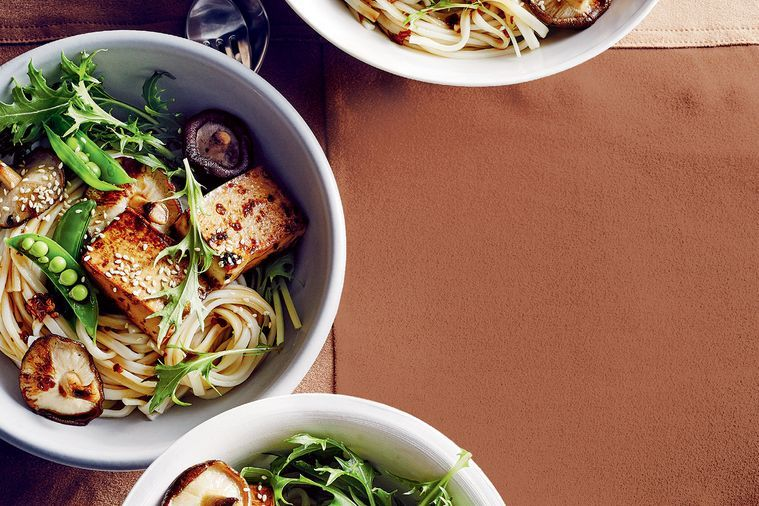

Udon Noodle Salad Teriyaki

Udon Noodle Salad With Teriyaki Tofu!
Udon noodle salad with teriyaki. A delicious meal perfect for sharing! Tofu is a solid alternative to meat. A great source of protein, iron and calcium.
Ingredients
- 270g Udon noodles
- 2 Tbs Peanut oil
- 250g Small shiitake mushrooms
- 2 Tsp Grated ginger
- 1 Tbs Mirin
- 2 Tbs Honey
- 1 Tsp Sambal oelek (Indonesian chilli paste)
- 500g Medium-firm tofu, cut into 1cm-thick slices
- 150g Mizuna or wild rocket leaves
- 150g Sugar snap peas, blanched, split
- 1 tbs Sesame seeds, toasted
Steps
- Bring a large saucepan of water to boil over medium-heigh heat. Add the noodles and cook for 8 minutes or until tender. Drain.
- Meanwhile, heat oil in a frypan over medium-high heat. Add the mushrooms and cook for 3-4 minutes until golden, remove from pan.
- Reduce heat to medium, add ginger, tamari, mirin, honey and sambal oelek to pan. Cook for 2-3 min until caramelised.
- Add tofu, then remove from heat and turn tofu to coat.
- Toss noodles with mizuna and sugar snap peas, and divide among bowls.
- Top with the mushrooms, tofu and sauce. Serve sprinkled with the sesame seeds.